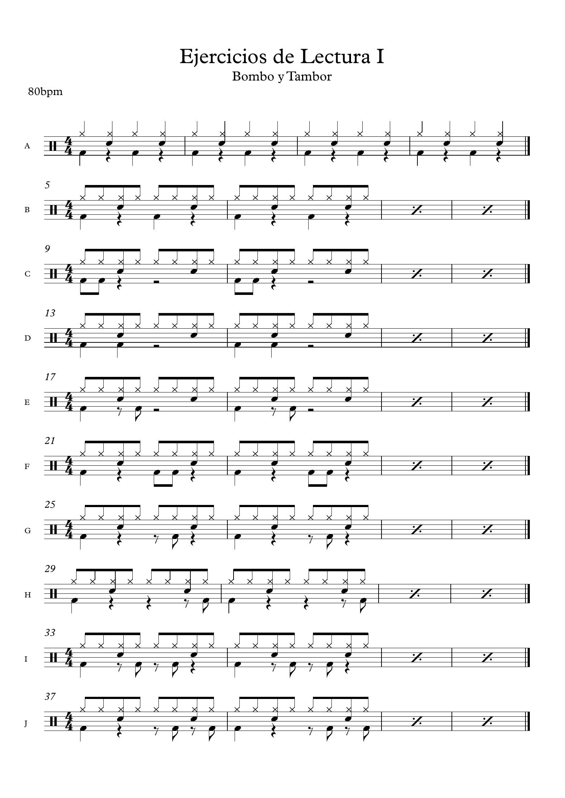

EJERCICIOS DE LECTURA I4/4
Exercise A
× Hi-hat● Snare (middle)● Kick (bottom)1 bar · repeats
1234
ReadyBPM
Start at 80 BPM. Keep the hi-hat even.
Space to play / stop
Groove editor
Tap a cell: rest → hit → accent → rest. Tap an instrument name to hear it.
Swipe the grid sideways to see all four beats.
Saved in this browser. Export a copy to keep a backup or move to another device.
Sound & volume
Drum samples from VisionPowered-AirDrums. MIT license.
Original practice sheet
Bombo y Tambor · 80 BPM. Each line repeats the same bar four times.
Open PDF ↗
Drum terms · English / Español
Spanish terms used in Argentina. Hi-hat and groove are also commonly used in English.
| English | Español (Argentina) |
|---|